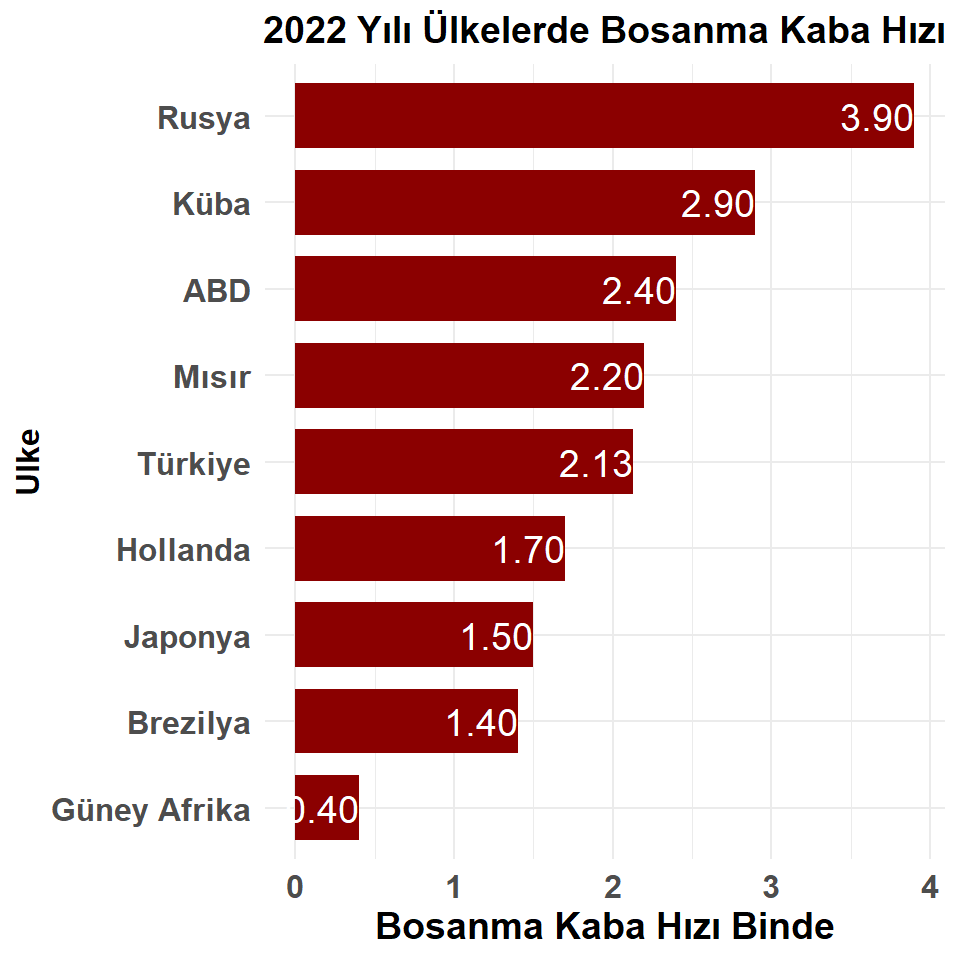
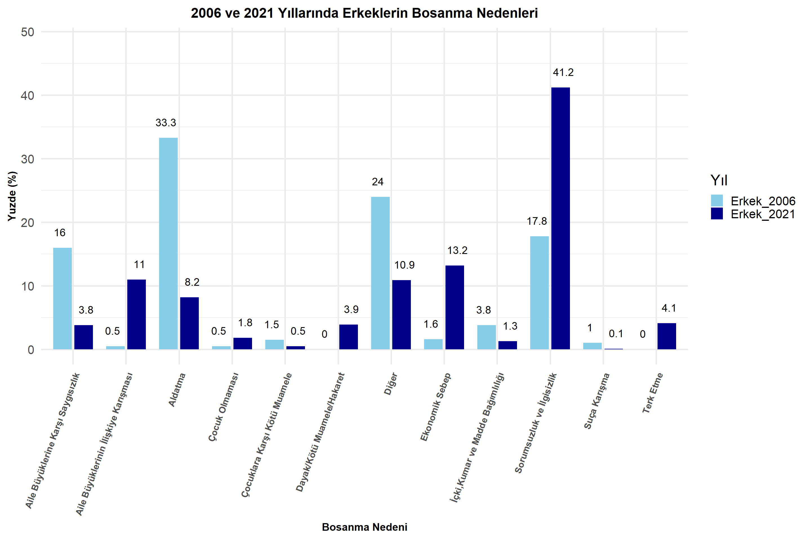
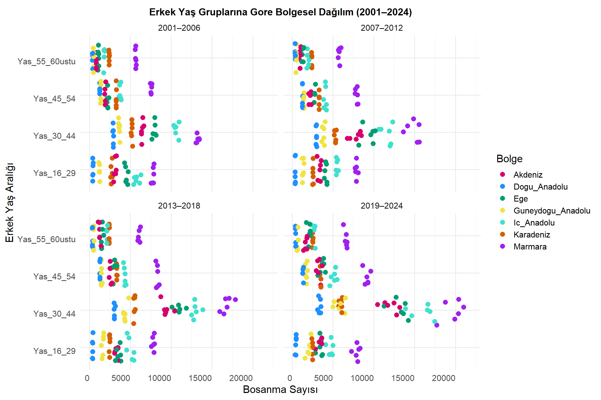

Durum <-c("evlenme_sayisi","bosanma_sayisi")grafik <- turkiye_geneli |>ggplot() +geom_line(aes(x = yil, y = evlenme_sayisi, color ="Evlenme Sayısı",group=1), linewidth =1.7) +geom_line(aes(x = yil, y = bosanma_sayisi, color ="Boşanma Sayısı",group=1), linewidth =1.7) +scale_color_manual(values =c("Evlenme Sayısı"="blue", "Boşanma Sayısı"="red")) +scale_y_continuous(breaks =seq(0, 700000, by =50000), labels = comma) +labs(title ="Turkiye'de Yıllara Gore Evlenme ve Bosanma Sayıları",x ="Yıl",y ="Kişi Sayısı",color ="Durum") +theme( axis.text.x =element_text(angle =90, hjust =1))grafik
Code
Durum <-c("evlenme_sayisi","bosanma_sayisi")grafik <- turkiye_geneli |>ggplot(aes(x=yil, y=bosanma_sayisi)) +geom_bar(stat ="identity", fill ="red",width =0.5)+labs(title ="Turkiye'de Yıllara Gore Bosanma Sayıları",x ="Yıl",y ="Kişi Sayısı") +theme( axis.text.x =element_text(angle =90, vjust =1, face ="bold"))+geom_text(aes(label = bosanma_sayisi), vjust =-0.5, size =3)+theme(axis.title =element_text(hjust =0.5, size =12, face ="bold"),plot.title=element_text(hjust =0.5, size =10,face ="bold"))grafik

Code
# Evlilik süresine göre boşanma sayısı grafiği#ortalama_evlilik_suresi_bazli<-apply(evlilik_suresi,2,mean)evlilik_suresi<-read_excel("veri/Evlilik_suresi_Turkiye_geneli.xlsx")head(evlilik_suresi)
# (Evlilik süresi ve yıllara göre boşanma sayısının karşılaştırılması)yillar_0_1<-vector()for (i inseq(1,24)){ yillar_0_1[i]<-sum(evlilik_suresi[i,2])}yillar_1_5<-vector()for (i inseq(1,24)){ yillar_1_5[i]<-sum(evlilik_suresi[i,3:7])}yillar_6_10<-vector()for (i inseq(1,24)){ yillar_6_10[i]<-sum(evlilik_suresi[i,8:12])}yillar_11_15<-vector()for (i inseq(1,24)){ yillar_11_15[i]<-sum(evlilik_suresi[i,13:17])}yillar_16_20<-vector()for (i inseq(1,24)){ yillar_16_20[i]<-sum(evlilik_suresi[i,18:22])}yillar <-vector()for(i inseq(1,24)){ yillar[i]<-evlilik_suresi[i,1]}yillar <-as.numeric (yillar)yillara_gore_bs <-data.frame('yil_0_1'=yillar_0_1,`yil_1_5`= yillar_1_5,`yil_6_10`= yillar_6_10,`yil_11_15`= yillar_11_15,`yil_16_20`= yillar_16_20)yillara_gore_bs$Yil <- yillardf_long <- yillara_gore_bs %>%pivot_longer(cols =-Yil, names_to ="Evlilik_Suresi", values_to ="Deger")df_long$Evlilik_Suresi <-factor(df_long$Evlilik_Suresi,levels =c("yil_0_1", "yil_1_5", "yil_6_10", "yil_11_15", "yil_16_20"))ggplot(df_long,aes(x = Yil, y = Deger, color = Evlilik_Suresi)) +geom_line(linewidth =1.2) +labs(title ="Yıllara Gore Bosanma Sayıları",x ="Yıllar",y ="Toplam Bosanma Sayısı" ) +theme_minimal()+scale_x_continuous(breaks =seq(min(df_long$Yil), max(df_long$Yil), by =1))+theme( axis.text.x =element_text(angle =90, hjust =1))+theme(plot.title =element_text(hjust =0.5, size =12, face ="bold") )
Code
#bölgelere göre erkek kadın boşanmakadin_bosanma_bolge <-read_excel("veri/yasmin-erdi/kadin_bosanma_bolge.xlsx")kadin_bosanma_bolge$Yil <-as.numeric (kadin_bosanma_bolge$Yil)str(kadin_bosanma_bolge)
tibble [96 × 9] (S3: tbl_df/tbl/data.frame)
$ Kadin_Yas_Grubu : chr [1:96] "Yas_16_29" "Yas_16_29" "Yas_16_29" "Yas_16_29" ...
$ Yil : num [1:96] 2001 2002 2003 2004 2005 ...
$ Akdeniz : num [1:96] 3269 3300 3215 3160 2946 ...
$ Ic_Anadolu : num [1:96] 5792 5798 5594 5342 5473 ...
$ Karadeniz : num [1:96] 2794 2803 2783 2661 2586 ...
$ Marmara : num [1:96] 3455 3428 3246 3007 3359 ...
$ Ege : num [1:96] 4732 4684 4442 4409 4523 ...
$ Guneydogu_Anadolu: num [1:96] 1127 1237 1227 1183 1218 ...
$ Dogu_Anadolu : num [1:96] 412 469 421 384 401 393 368 360 388 388 ...
Code
veri_long <- kadin_bosanma_bolge %>%pivot_longer(cols =-c(Kadin_Yas_Grubu, Yil), names_to ="Bolge", values_to ="Deger")veri_long <- veri_long %>%mutate(Donem =case_when( Yil %in%2001:2006~"2001–2006", Yil %in%2007:2012~"2007–2012", Yil %in%2013:2018~"2013–2018", Yil %in%2019:2024~"2019–2024",TRUE~NA_character_ )) %>%filter(!is.na(Donem))# Grafik çizimi: 4 facet, her biri bir dönem (kadın)(yasmin-erdi)ggplot(veri_long, aes(x = Deger , y = Kadin_Yas_Grubu, color = Bolge)) +geom_point(position =position_jitter(width =0.1), size =1, alpha =1) +facet_wrap(~ Donem, ncol =2) +labs(title ="Kadın Yaş Gruplarına Gore Bolgesel Dağılım (2001–2024)",x ="Bosanma Sayısı",y ="Kadın Yaş Aralığı",color ="Bolge") +theme_minimal() +theme(axis.text.x =element_text(angle =0, hjust =1))+scale_x_continuous(limits =c(0, 20000), breaks =seq(0, 20000, 5000))+scale_color_manual(values =c("Akdeniz"="#E69F00","Dogu_Anadolu"="#56B4E9","Ege"="#009E73","Guneydogu_Anadolu"="#F0E442","Ic_Anadolu"="#0072B2","Karadeniz"="#D55E00","Marmara"="#CC79A7"))
3 Grafik çizimi: 4 facet, her biri bir dönem (erkek)(yasmin-erdi)
tibble [96 × 9] (S3: tbl_df/tbl/data.frame)
$ Erkek_Yas_Grubu : chr [1:96] "Yas_16_29" "Yas_16_29" "Yas_16_29" "Yas_16_29" ...
$ Yil : chr [1:96] "2001" "2002" "2003" "2004" ...
$ Akdeniz : num [1:96] 3269 3300 3215 3160 2946 ...
$ Karadeniz : num [1:96] 2794 2803 2783 2661 2586 ...
$ Ege : num [1:96] 4732 4684 4442 4409 4523 ...
$ Guneydogu_Anadolu: num [1:96] 1127 1237 1227 1183 1218 ...
$ Dogu_Anadolu : num [1:96] 412 469 421 384 401 393 368 360 388 388 ...
$ Ic_Anadolu : num [1:96] 6314 6156 5746 5417 5683 ...
$ Marmara : num [1:96] 7850 7862 7696 7539 7893 ...
Code
erkek_bosanma_bolge$Yil <-as.numeric (erkek_bosanma_bolge$Yil)veri_long1 <- erkek_bosanma_bolge %>%pivot_longer(cols =-c(Erkek_Yas_Grubu, Yil), names_to ="Bolge", values_to ="Deger")veri_long1 <- veri_long1 %>%mutate(Donem =case_when( Yil %in%2001:2006~"2001–2006", Yil %in%2007:2012~"2007–2012", Yil %in%2013:2018~"2013–2018", Yil %in%2019:2024~"2019–2024",TRUE~NA_character_ )) %>%filter(!is.na(Donem))ggplot(veri_long1, aes(x = Deger , y = Erkek_Yas_Grubu, color = Bolge)) +geom_point(position =position_jitter(width =0.1), size =1, alpha =1) +facet_wrap(~ Donem, ncol =2) +labs(title ="Erkek Yaş Gruplarına Gore Bolgesel Dağılım (2001–2024)",x ="Bosanma Sayısı",y ="Erkek Yaş Aralığı",color ="Bolge") +theme_minimal() +theme(axis.text.x =element_text(angle =0, hjust =1))+scale_x_continuous(limits =c(0, 22000), breaks =seq(0, 20000, 5000))+scale_color_manual(values =c("Akdeniz"="#E69F00","Dogu_Anadolu"="#56B4E9","Ege"="#009E73","Guneydogu_Anadolu"="#F0E442","Ic_Anadolu"="#0072B2","Karadeniz"="#D55E00","Marmara"="#CC79A7"))

Code
#türkiye geneli eşler arası yaş farkı (yasmin-erdi)Yas_Farki_Turkiye_geneli <-read_excel("veri/yasmin-erdi/Yas_Farki_Turkiye_geneli.xlsx")str(Yas_Farki_Turkiye_geneli)
# Kolon adını düzelt (boşluk içeriyor)colnames(df_kadin)[3] <-"Bosanan_Kadin_Sayisi"# Barplot çizimiggplot(df_kadin, aes(x =as.factor(Yil), y = Bosanan_Kadin_Sayisi, fill = Yas_Grubu)) +geom_bar(stat ="identity", position ="dodge") +theme_minimal() +labs(title ="Turkiye'de Bosanan Kadın Yaş Dağılımı", x ="Yıl", y ="Boşanan Kadın Sayısı") +theme(axis.text.x =element_text(angle =45, hjust =1))
Code
#Kadın Yaş Dağılımları Yıllara göre Bitiş#
##Erkek Yaş Dağılımları Yıllara göre#
Code
# Veriyi okudf_erkek <-read_excel("veri/Kadin_Erkek_Yas_Dagilimlari_Turkiye.xlsx", sheet ="Erkek Yaş Dağılımı")str(df_erkek)
# Kolon adını düzelt (boşluk içeriyor)colnames(df_erkek)[3] <-"Bosanan_Erkek_Sayisi"# Barplot çizimiggplot(df_erkek, aes(x =as.factor(Yil), y = Bosanan_Erkek_Sayisi, fill = Yas_Grubu)) +geom_bar(stat ="identity", position ="dodge") +theme_minimal() +labs(title ="Turkiye'de Bosanan Erkek Yaş Dağılımı", x ="Yıl", y ="Boşanan Erkek Sayısı") +theme(axis.text.x =element_text(angle =45, hjust =1))

Code
#Erkek Yaş Dağılımları Yıllara göre Bitiş#
Code
# Daire grafiklerilibrary(readxl)library(RColorBrewer)# Veriyi okudf <-read_excel("veri/Kadin_Erkek_Yas_Dagilimlari_Turkiye Genelll.xlsx")# Kadın ve erkek verisikadin_veri <- df$Turkiye_Kadin_Dagilimerkek_veri <- df$Turkiye_Erkek_Dagilimyas_gruplari <- df$Yas_Grubu# Yüzdeleri hesaplakadin_yuzde <-round(kadin_veri /sum(kadin_veri) *100, 1)erkek_yuzde <-round(erkek_veri /sum(erkek_veri) *100, 1)# Etiketleri oluşturkadin_etiketler <-paste0(yas_gruplari, "\n", kadin_yuzde, "%")erkek_etiketler <-paste0(yas_gruplari, "\n", erkek_yuzde, "%")# PASTEL renk paleti (4 yaş grubu için)renkler <-brewer.pal(n =4, name ="Pastel1") # Alternatif: "Set3"# Grafik ekranını ikiye bölpar(mfrow =c(1, 2))# Kadın grafiğipie(kadin_veri, labels = kadin_etiketler, main ="Boşanma Yaş Dağılımı (Kadın)", col = renkler,font=2,cex=0.5)# Erkek grafiğipie(erkek_veri, labels = erkek_etiketler, main ="Boşanma Yaş Dağılımı (Erkek)", col = renkler,font=2,cex=0.5)
Code
##PieChart Bitiş
#Nufüs oranlarına göre Boşanma Sayılarının Gösterilmesi